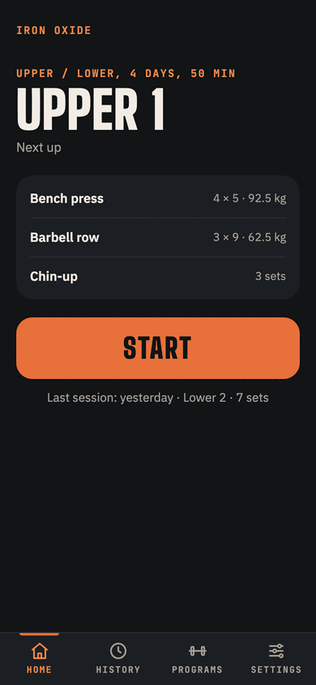

Log a set with your thumb
Open the app and today's session is waiting, its targets worked out from your last sessions. Tap Start: reps and weight sit on two big steppers already set to the target. Lifted something else? Nudge them, then tap Done. Warm-up sets from your program come first.